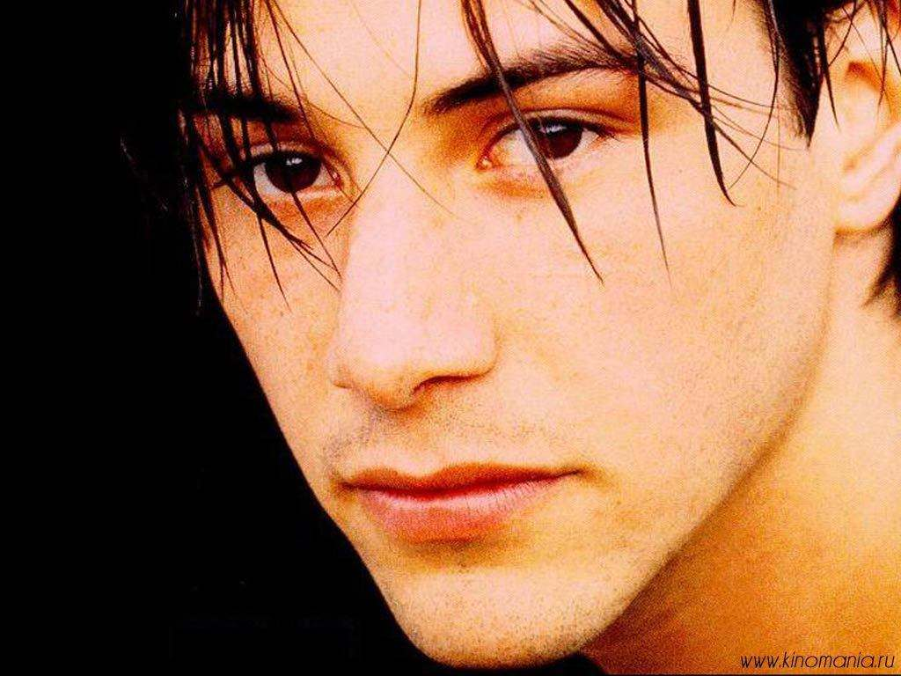
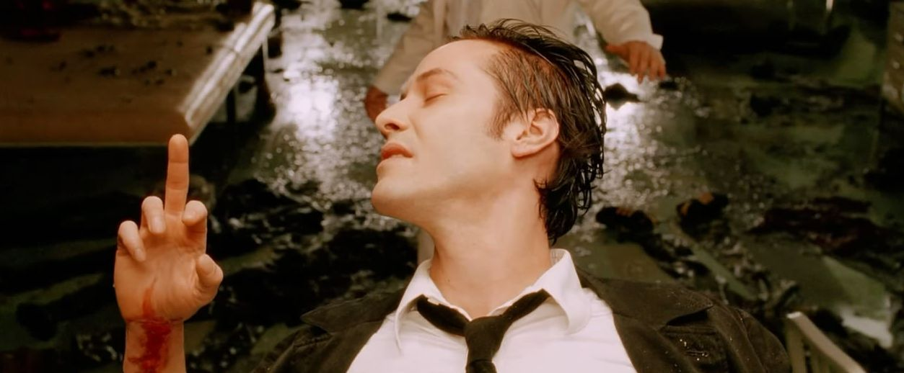
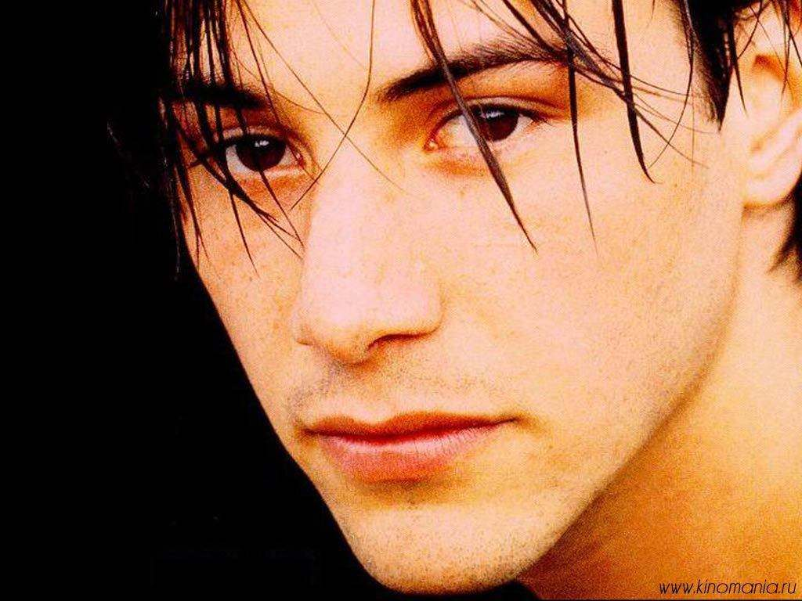
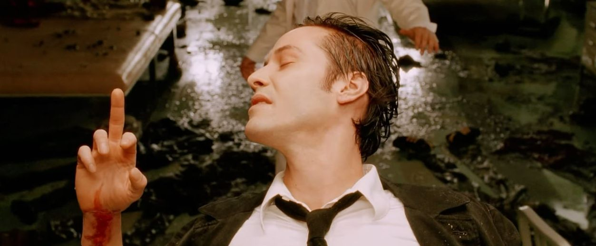

基努·查尔斯·里维斯（英语：Keanu CharlesReeves，/kiˈɑːnuː/，kee-AH-noo；1964年9月2日－）[2]是一名加拿大男演员、导演、制片人和音乐家。出演过较著名的作品如电影《阿比和阿弟的冒险》（1989年）、《惊爆点》（1991年）、《生死时速》（1994年）、《黑客帝国》系列（1999年至2003年）、《正义悍将》（2008年）和《疾速追杀》系列（2014年至2019年）。此外，他还曾于2005年的《康斯坦丁》中主演约翰·康斯坦汀。 在艺术创作方面，里维斯曾与插画家亚历山德拉·格兰特共同创作一本名为《Ode toHappiness》的书。他曾制作过一部2012年的纪录片《基努里维斯之数位任务》。此外还执导过电影《太极侠》（2013年）里维斯于2014年的动作片《疾速追杀》中担任男主角，也获得了正面的评价。
| 时间 | 片名 | 人物 |
|---|---|---|
| 1991 | 惊爆点 | Johnny Utah |
| 1994 | 生死时速 | Jack Traven |
| 1997 | 魔鬼代言人 | Kevin Lomax |
| 1999 | 黑客帝国 | 汤玛斯·安德森／尼欧 |
| 2005 | 康斯坦丁 | 约翰·康斯坦汀 |
| 2008 | 地球停转之日 | Klaatu |
| 2017 | 疾速特攻 | John Wick |
1999年12月，里维斯当时的女友珍妮弗·赛姆生下他们的女儿，但不幸的是疑似因为吸毒，导致生下来的是个死胎。在2001年4月，珍妮弗·赛姆在车祸中不幸丧生了，此后里维斯再也没有与任何人有正式交往关系，一直维持单身汉生活。而由其主演的《捍卫生死线》的故事灵感之一正是由此而来，剧情元素与现实相近也是里维斯接拍此电影的原因之一。
他非常疼惜从小相依为命的妹妹金·里维斯，却不幸罹患了白血病，媒体常常拍到他陪伴着妹妹，金的白血症最后也得以痊愈。1994年《生死时速》走红前夕，他都还睡在朋友家的地板上。
里维斯喜欢骑摩托车（尤其是重型机车），他常形容自己晚上关了车头灯开车为“魔鬼驾驶”。在1988年的一次“魔鬼驾驶”中，他在Topanga Canyon附近出了车祸撞断了好几根肋骨，并在肚子上留下了永久的疤痕。在救援医疗队到来并把他抬上担架后，其中一个实习生一不小心失手把他又摔在了地上。
除了摩托车，他也爱好国际象棋、冰球、和乒乓球。
他本身是左撇子，但却用右手弹电贝斯。他很喜欢朋克摇滚乐队雷蒙斯合唱团、性手枪和“The Clash”，在1992年的一个除夕夜晚会表演上，他代替了去参加婚礼的贝斯手“Joe Escalante”。他曾是乐队天狼星的成员。在2005年他宣布退出乐坛。
据HelloMagazine报导，里维斯很慷慨，他也曾花了一大笔钱感谢在《黑客帝国》系列中当他替身的12位演员，为他们各买了一台相当昂贵哈雷重型机车作为感谢，最后他甚至把《黑客帝国》系列里获得的片酬5千万英镑送给了整个剧组。
里维斯没有正式的宗教信仰，虽然他有天主教的家庭背景并对佛教很感兴趣。
2014年9月12日，里维斯睡醒来发现有一位女粉丝出现在他的书房，女粉丝表示非常想见他。里维斯很冷静地报了警，并请警察帮她作精神鉴定。于2014年9月15日，又有第二位女粉丝透过清洁公司偷偷进到了里维斯家，并脱光衣服在浴室洗澡，接着在泳池裸泳。这让清洁人员起了疑心，并赶紧报警将其女性带走。这两起事件皆发生于里维斯在好莱坞山的家中。
.jpg) 


